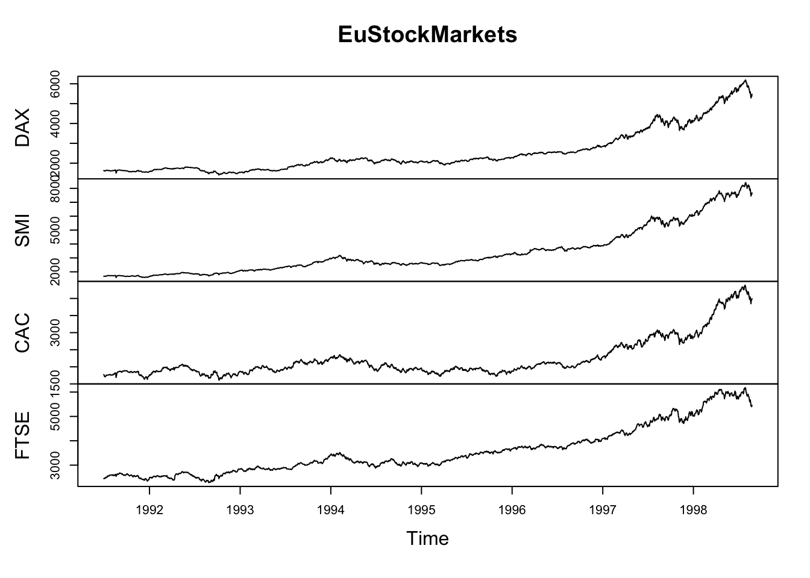
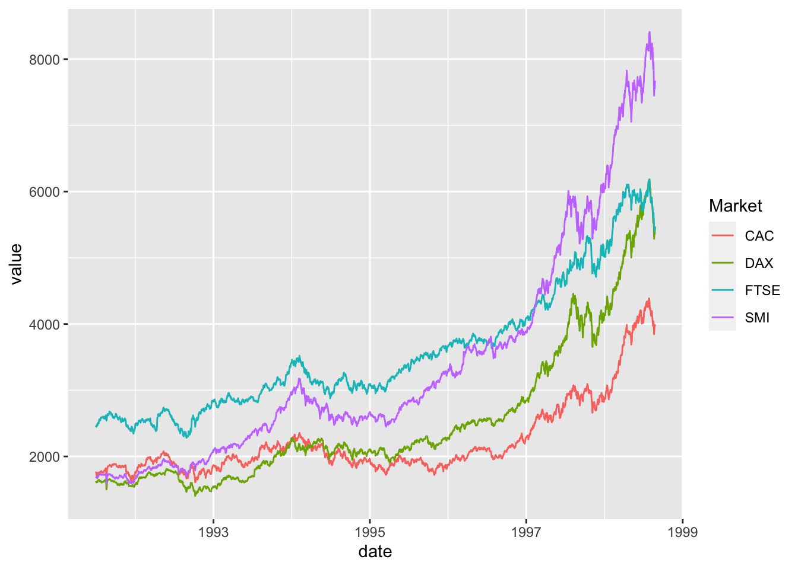
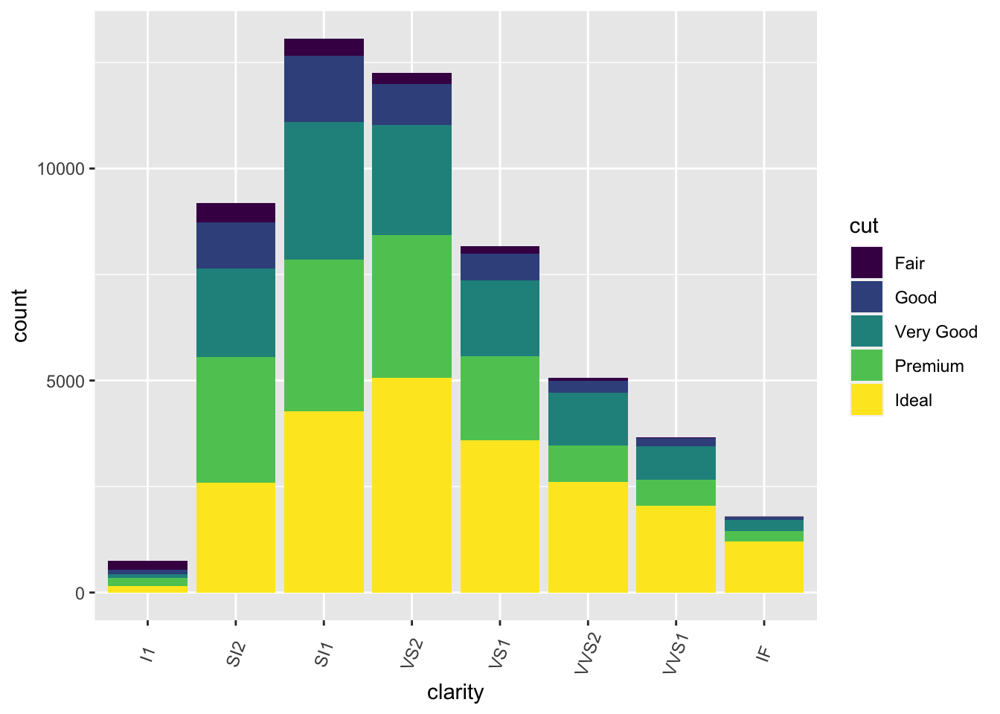
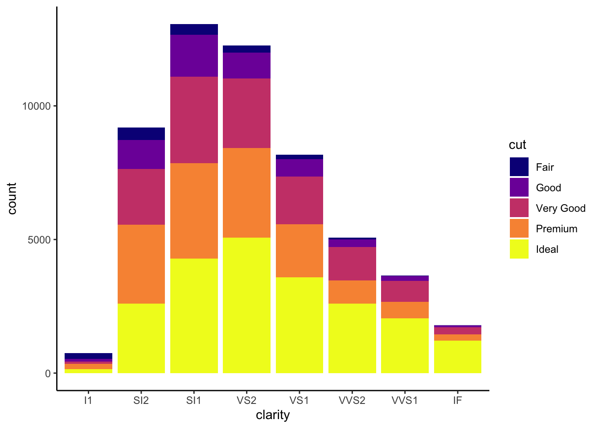
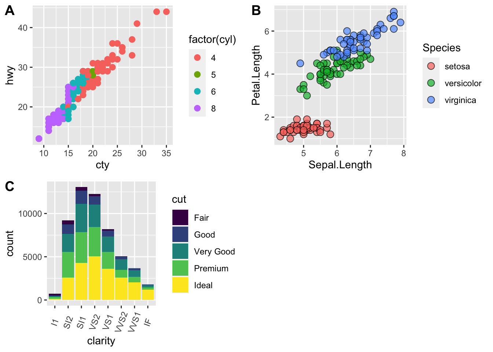
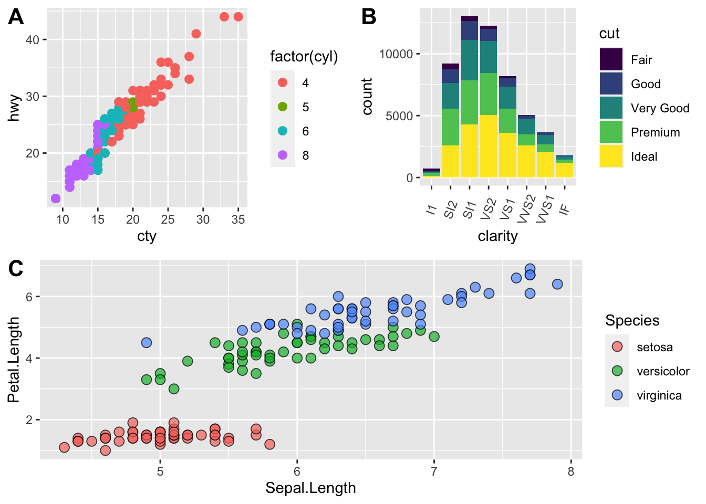

Data visualization best practices for publication and accessibility
Learning Objectives
- Learn some basic visualization dos and don’ts
- Learn how to customize color in plots
- Gain a basic understanding of package
cowplot - Introduction to interactive
plotlypackage
Data Visualization in R
There are many tips and tricks that are available for the multitude of visualization packages in R. However, there aren’t as many simple rules or suggestions on what actually makes a good visualization. This starts with the “grammar of graphics”, which is the fundamental rules or principals which describe an art or science (from Wickham 2010).
“A good grammar will allow us to gain insight into the composition of complicated graphics, and reveal unexpected connections between seemingly different graphics (Cox 1978)”
Because there are so many options and methods to plot our data in R, we need to think about how we are going to represent the data, how can that data be interpreted visually, and what story it may tell.
A very nice example of this is provided by this animation (created by Darkhorse Analytics, and used in Jenny Bryan’s excellent stat545 course). It shows how simplification can make a big difference in communication.

Less is more graphic
Exploration vs. Communication
One thing to consider is what the objective is when creating a visualization or plot. When we build plots for exploratory purposes, we already know what the variables are we are using, and the objective is more about what sort of patterns the data might show. When communicating, the objective is more about providing a stand-alone snapshot which helps others understand what you are trying to convey. We’ll cover more on this when we talk about Rmarkdown.
ggplot2
While there are many visualization options in R, we believe the most comprehensive and powerful is the ggplot2 package. Much of the class has used/follows ggplot, so here’s a little background that might be useful.
- Based on Grammar of Graphics book by Leland Wilkinson hence ‘gg’
- Each part of the plot is layered or built upon the other parts (like building legos).
- Consider parts of a
ggplot2as parts of a house.- Data = The materials the house is built from (
ggplot(data=yourdata)) - Plot Type = The structure/design of your house (how will it look?) (
geom_) - Aesthetics = What the exterior looks like, i.e., the paint/decor (
aes()) - Stats = Ways to wire or plumb your house…how to tie your data together, or transform it (
stat_)
- Data = The materials the house is built from (
A questions we often get asked when helping students with ggplot figures is, how can I put two y-axis on my graph? Short answer, with ggplot, you can’t. There is a good reason for this though, which is basically that the creators of ggplot2 believe that duel y-axis are confusing, eaisly misunderstood and not invertible (given a point on the plot space, you can not uniquely map it back to a point in the data space). We agree with this logic, and would urge you to never put two differnt y-axis on the same plot. Instead, make two seperate graphs.
Color
There are so many options in R. It is fun to play around with color, but keep in mind not everyone sees color in the same way, and some folks cannot see certain spectrums of color (i.e., absence of blue or green receptors is common). See below for a example of what colorblindness may do…if you see numbers inside these circles, great, you have some blue/green retinal receptors.


Having said that, here’s a great cheat sheet of colors in R, it can be handy when trying to find the correct color or name of a color. Check out this recent Nature perspective piece on The misuse of colour in science communication.
Discrete/Categorical:
For a very nice discussion about color palettes, I recommend this page from the R cookbook folks.
Additionally, check out the great ggthemes package, which has many options. One I find very helpful is using scale_color_colorblind(), which if you have 8-9 categories, may be a nice way to display your data.
Continuous: viridis
The viridis package is an excellent set of colors that better represent your data, are easier to read for those with colorblindness, and they also tend to print fairly well in grayscale.
Take a look at the vignette online!
An example:

viridis
Visualization Tips
This information isn’t meant to be comprehensive, but at minimum, it may provide some guidance when you are creating plots and figures.
Visualization Do’s
The most basic tip is keep it simple! Stick with a clean and clear message, what is your plot/figure trying to get across? Data visualization is effective when it is simple, and repackages data into a visual story that is easy to understand.
- Label appropriately and legibly, including axes, and use text to highlight important bits
- Use one color to represent each category, consider colorblind/BW friendly palettes
- Order datasets using logical heirarchy (Make it easy for reader to compare values)
- Use icons when possible to reduce unnecessary labeling
- Pay attention to scale (e.g., start axis at zero not 2.4 to 3.5)
- Include your data/outliers where possible
Visualization Don’ts
A few things to avoid (which basically relates to keeping it simple):
- Don’t try to add too much into one plot…keep it simple
- Don’t add color uncessarily unless it provides a specific function
- Avoid high contrast colors (red/green or blue/yellow)
- Don’t use 3D charts. They can make it hard to discern or perceive the actual information.
- Avoid ornamentation (shadowing, extra illustration, etc)
- Avoid more than 6 categorical colors in a layout unless you looking at continuous data.
- Keep fonts simple (avoid uncessary bold or italicization)
- Don’t try to compare too many categories or data types in one chart
Examples
Scatterplots
One of the best simple plots for examining patterns in data, but very effective. Also used when adding model trend lines.
suppressPackageStartupMessages(library(ggplot2))
plot(x=iris$Petal.Width) # single variable
plot(x=iris$Petal.Width, y=iris$Petal.Length) # multiple variables
ggplot() + geom_point(data=iris, aes(x=Petal.Width, y=Petal.Length))
ggplot() + geom_point(data=iris, aes(x=Petal.Width, y=Petal.Length, fill=Species), pch=21, size=3, alpha=0.5)
Lineplots
Comparing relative change in quantities across a variable like time. Note the change when we avoid facetting each line independently.
plot(EuStockMarkets)
suppressPackageStartupMessages(library(tidyverse))
EuStockMarkets_df <- data.frame(as.matrix(EuStockMarkets), date=as.numeric(time(EuStockMarkets)))
EuStockMarkets_long <- gather(data = EuStockMarkets_df, key = "Market", value="value", 1:4)
ggplot() + geom_line(data=EuStockMarkets_long, aes(x=date, y=value, color=Market))
Barplots
Comparing totals across multiple groups. Notice legibility when you stack the bars.
# code adpated from https://www.analyticsvidhya.com/blog/2015/07/guide-data-visualization-r/
suppressPackageStartupMessages(library(viridis))
barplot(iris$Petal.Length)
barplot(iris$Sepal.Length,col = viridis(3, option = "A")) 
barplot(table(iris$Species,iris$Sepal.Length),col = viridis(3, option = "A")) 
Customizing color pallettes in ggplot
The viridis color pallettes have been built into ggplot so that you can call upon them using the scale_fill_viridis_ or scale_color_viridis_ functions. Note that whether or not you use the fill or color scale function depends on which aesthetic you set in your plot. The functions also have extenstions depending on the kind of variable that you want to color: scale_fill_viridis_d is for discrete variables while scale_fill_viridis_c is for continous variables. Within the function, you can specify which virids pallette to use: A-D.
In this example we fill in our bars with the cut vairable in the diamond dataset, a categorical variable with 5 groups.
library(ggplot2)
ggplot(diamonds, aes(x = clarity, fill = cut)) +
geom_bar() +
theme(axis.text.x = element_text(angle=70, vjust=0.5)) +
scale_fill_viridis_d(option = "C") +
theme_classic()
Publishing Plots: cowplot
A few excellent options exist for creating multi-paneled plots for publications. The first and foremost is a package by Claus Wilke called cowplot. With cowplot, it’s possible to quickly combine existing ggplots, creating publication quality plots. See the vignette for more options, but here’s a quick example from the vignette below:
library(cowplot)
# make a few plots:
plot.diamonds <- ggplot(diamonds, aes(clarity, fill = cut)) +
geom_bar() +
theme(axis.text.x = element_text(angle=70, vjust=0.5))
#plot.diamonds
plot.cars <- ggplot(mpg, aes(x = cty, y = hwy, colour = factor(cyl))) +
geom_point(size = 2.5)
#plot.cars
plot.iris <- ggplot(data=iris, aes(x=Sepal.Length, y=Petal.Length, fill=Species)) +
geom_point(size=3, alpha=0.7, shape=21)
#plot.iris
# use plot_grid
panel_plot <- plot_grid(plot.cars, plot.iris, plot.diamonds, labels=c("A", "B", "C"), ncol=2, nrow = 2)
panel_plot
# fix the sizes draw_plot
fixed_gridplot <- ggdraw() + draw_plot(plot.iris, x = 0, y = 0, width = 1, height = 0.5) +
draw_plot(plot.cars, x=0, y=.5, width=0.5, height = 0.5) +
draw_plot(plot.diamonds, x=0.5, y=0.5, width=0.5, height = 0.5) +
draw_plot_label(label = c("A","B","C"), x = c(0, 0.5, 0), y = c(1, 1, 0.5))
fixed_gridplot
Saving Figures and Plots
A plot you created with ggplot or another plotting package can be saved as .JPEGS (or .tiff, .img, etc) onto you. For any ggplot objects, we recommend using ggsave.
First, let’s create a new folder in this project called figures. Let’s save all the figures we create to that folder. ggsave will default to saving the last plot you created, however, we think it is always a good idea to specify exactly which plot you want saved. To do that, we have to save our plot as an object.
ggsave("figures/gridplot.png", fixed_gridplot)With ggsave you can save images as
- .png, .jpeg, .tiff, .pdf, .bmp, or .svg
Other arguments of ggsave
scalecan scale the image (multiplicative scaling factor)widthandheightlet you specify the size of the image inunitsthat you specifydpican change the quality of the image; for publication graphs we suggest over 700 dpi
ggsave("figures/gridplot.png", fixed_gridplot, width = 6, height = 4, units = "in", dpi = 700)The package plotly
The package plotly is an excellent, easy to use resource that allows you to quickly create interactive, web-based figures. We have used plotly to illustrate patterns in data to collaborators, to visualize patterns in our data during the pre-analysis stage, and even impress with “fancy” graphics during a conference talk!
Let’s try plotly together using some of the iris data:
library(plotly)
plot.iris <- ggplot(data=iris, aes(x=Sepal.Length, y=Petal.Length, fill=Species)) +
geom_point(size=3, alpha=0.7, shape=21)
plotly::ggplotly(plot.iris) #it's as simple as that! This lesson is adapted from the Software Carpentry: R for Reproducible Scientific Analysis Vectors and Data Frames materials and the Data Carpentry: R for Data Analysis and Visualization of Ecological Data Exporting Data materials.